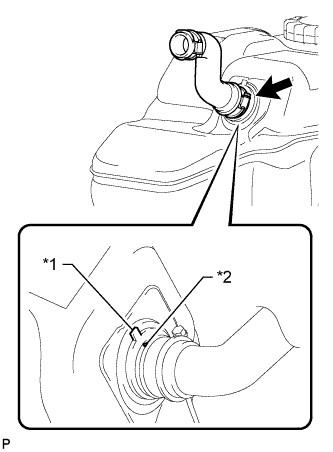
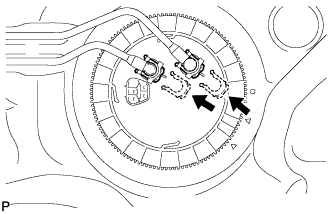
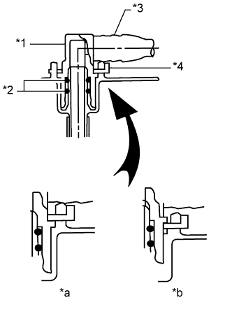
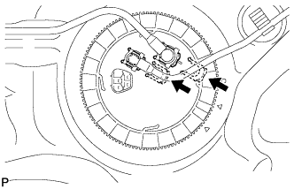
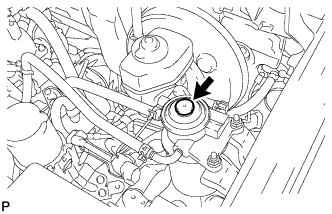

ТОПЛИВНЫЙ БАК > УСТАНОВКА |
| 1. INSTALL FUEL TANK TO FILLER PIPE HOSE |
|  |
Align the fuel tank side mark with the hose side mark.
| *1 | Fuel Tank Side Mark |
| *2 | Hose Side Mark |
Install the fuel tank to filler pipe hose to the fuel tank.
| 2. INSTALL NO. 3 FUEL TANK PROTECTOR |
Install the No. 3 fuel tank protector and attach the 4 clamps.
Install the 2 bolts.
| 3. INSTALL FUEL TANK VENT TUBE ASSEMBLY |
Apply a light coat of gasoline or grease to a new gasket and install the gasket to the fuel tank.
 |
Align the protrusion of the fuel tank vent tube with the groove of the fuel tank.
| *1 | Protrusion |
| *2 | Groove |
Install the fuel tank vent tube to the fuel tank.
Put a new retainer on the fuel tank. While holding the fuel tank vent tube, tighten the retainer one complete turn by hand.
| *1 | Start Mark (Fuel Tank Side) |
| *2 | Start Mark (Retainer Side) |
 |
 |
Set SST on the retainer.
 |
Using SST, tighten the retainer until the mark on the retainer is within range A on the fuel tank as shown in the illustration.
| *1 | Fuel Tank Side Mark |
| *2 | Retainer Side Mark |
| 4. INSTALL FUEL TANK MAIN TUBE SUB-ASSEMBLY AND FUEL RETURN TUBE SUB-ASSEMBLY (for Single Tank Type) |
|  |
Install the fuel tank main tube and fuel return tube with the 2 fuel tube joint clips.
|  |
| *1 | Fuel Tube Joint |
| *2 | O-Ring |
| *3 | Fuel Tube |
| *4 | Fuel Tube Joint Clip |
| *a | CORRECT |
| *b | INCORRECT |
Install the fuel tank main tube and fuel return tube to the fuel tank.
| 5. INSTALL FUEL TANK MAIN TUBE SUB-ASSEMBLY AND FUEL RETURN TUBE SUB-ASSEMBLY (for Double Tank Type) |
|  |
Install the fuel tank main tube and fuel return tube with the 2 fuel tube joint clips.
| *1 | Fuel Tube Joint |
| *2 | O-Ring |
| *3 | Fuel Tube |
| *4 | Fuel Tube Joint Clip |
| *a | CORRECT |
| *b | INCORRECT |
Install the fuel tank main tube to the fuel tank.
Install the fuel return tube to the fuel tank and attach the clamp.
| 6. INSTALL FUEL TANK CUSHION |
Install 3 new fuel tank cushions to the fuel tank.
| 7. INSTALL FUEL TANK SUB-ASSEMBLY |
Set the fuel tank on a transmission jack and rise the transmission jack.
Install the 2 fuel tank bands with the 2 pins and 2 clips.
Connect the 2 fuel tank bands with the 2 bolts.
| 8. CONNECT FUEL TANK TO FILLER PIPE HOSE |
Connect the fuel tank to filler pipe hose to the filler pipe.
| 9. CONNECT FUEL TANK BREATHER TUBE SUB-ASSEMBLY (for Single Tank Type) |
Connect the fuel tank breather tube (See page Нажмите здесь).
| 10. CONNECT FUEL CUT OFF TUBE (for Single Tank Type) |
| 11. CONNECT FUEL TANK BREATHER TUBE SUB-ASSEMBLY (for Double Tank Type) |
Connect the fuel tank breather tube (See page Нажмите здесь).
| 12. CONNECT FUEL RETURN TUBE SUB-ASSEMBLY (for Double Tank Type) |
Connect the fuel return tube (See page Нажмите здесь).
| 13. CONNECT FUEL CUT OFF TUBE (for Double Tank Type) |
Connect the fuel cut off tube (See page Нажмите здесь).
| 14. CONNECT FUEL RETURN TUBE SUB-ASSEMBLY (for Single Tank Type) |
| 15. CONNECT FUEL TANK MAIN TUBE SUB-ASSEMBLY (for Single Tank Type) |
| 16. CONNECT FUEL TANK MAIN TUBE SUB-ASSEMBLY (for Double Tank Type) |
| 17. INSTALL NO. 1 FUEL TANK PROTECTOR SUB-ASSEMBLY |
Install the No. 1 fuel tank protector with the 6 bolts.
| 18. INSTALL REAR FLOOR SERVICE HOLE COVER |
Connect the fuel sender gauge connector.
Install the rear floor service hole cover with the 3 screws.
| 19. INSTALL REAR SEAT ASSEMBLY LH |
for 60/40 Split Double-folding Seat Type LH Side:
Install the rear seat assembly LH (See page Нажмите здесь).
for 60/40 Split Slide Walk-in Seat Type LH Side:
Install the rear seat assembly LH (See page Нажмите здесь).
| 20. CONNECT CABLE TO NEGATIVE BATTERY TERMINAL |
| 21. BLEED AIR FROM FUEL SYSTEM |
|  |
Using the hand pump mounted on the fuel filter cap, bleed the air from the fuel system. Continue pumping until the pump resistance increases.
| 22. INSPECT FOR FUEL LEAK |
Check that there are no fuel leaks anywhere in the fuel system after performing maintenance.